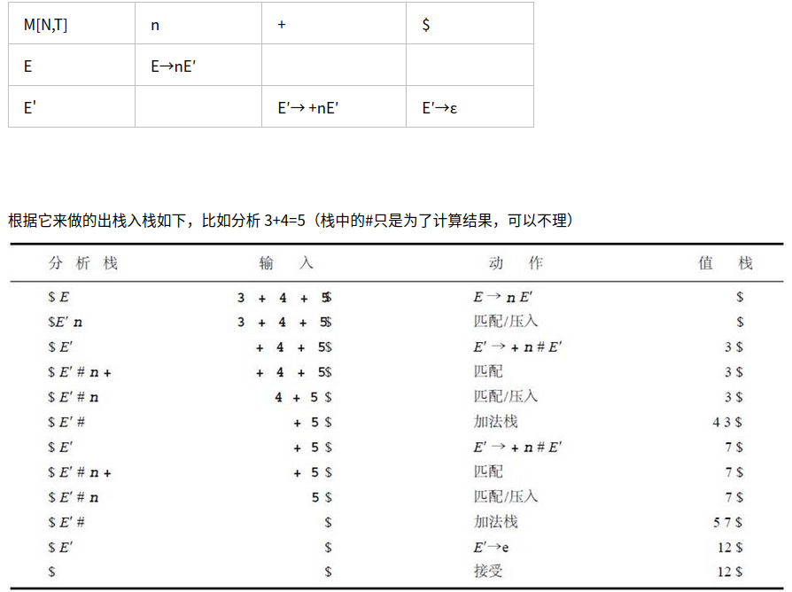
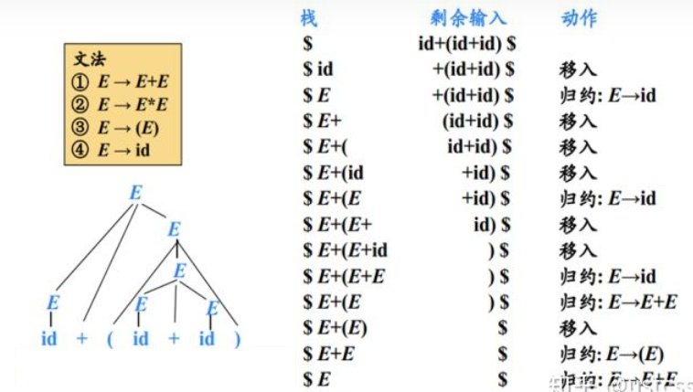
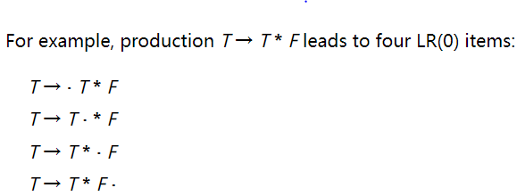
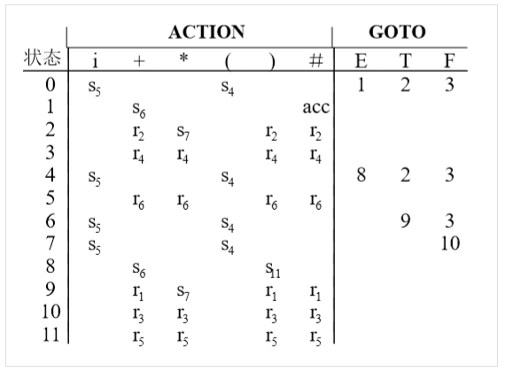
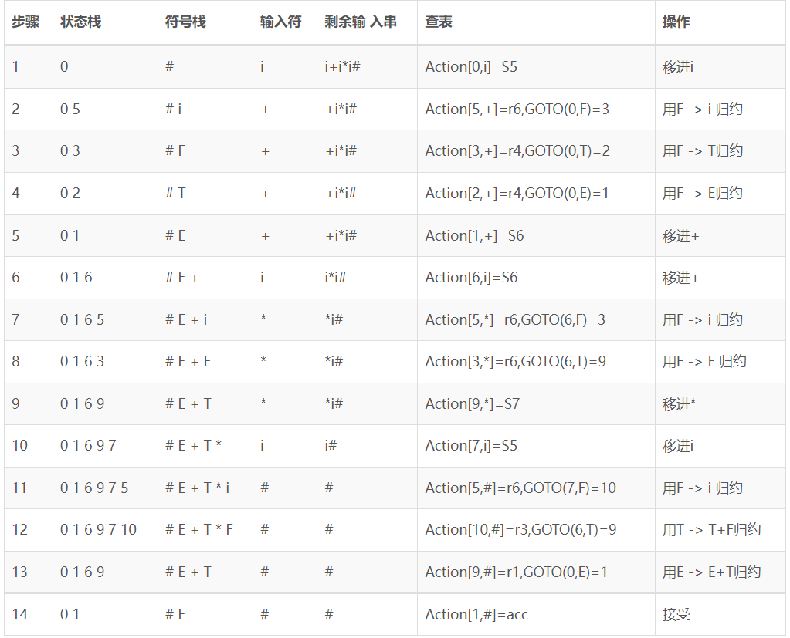
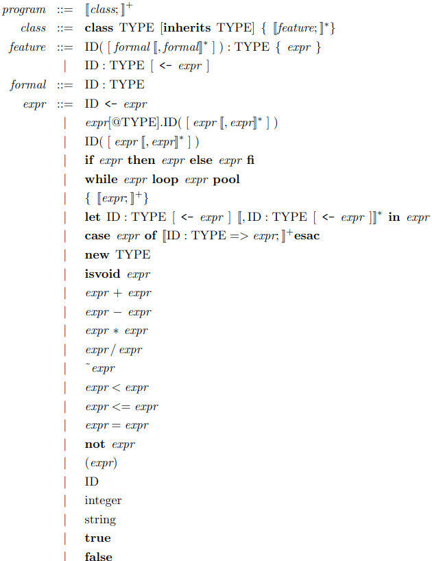
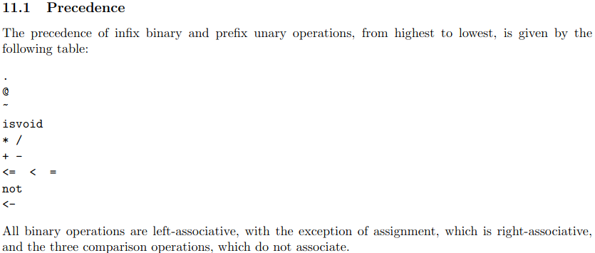
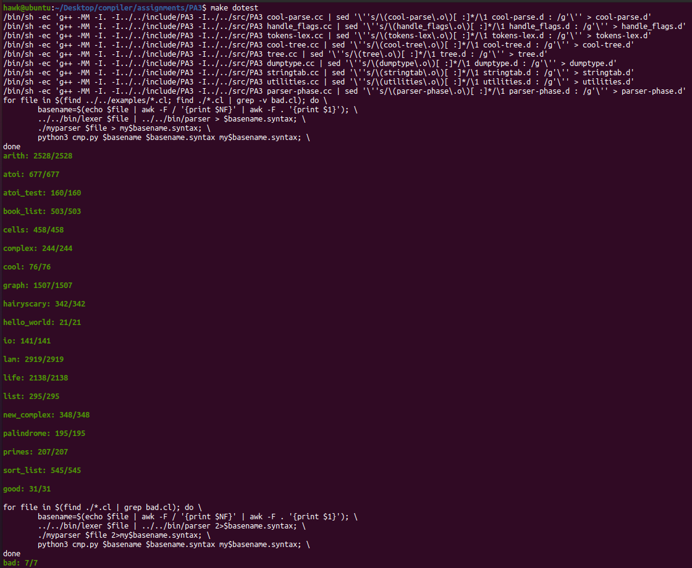

编译原理-设计与实现-二
前言
本篇博客记录语法分析部分，并且完成Programming Assignment III
Syntax Analysis/Parsing
语法分析是编译器的第二个阶段。语法分析器从词法分析器获得一个由词法单元组成的串，并验证这个串可以由源语言的文法生成
Context-Free Grammars
一个上下文无关文法由以下几个部分构成
- 一个终结符号集合。在编译器的例子中，就是词法分析器输出的词法单元集合
- 一个非终结符集合。每个非终结符表示一个终结符号串的集合
- 一个产生式集合。其中每个产生式由如下元素组成：
- 一个称为产生式头或左部的非终结符号
- 一个箭头
- 一个称为产生式体或右部的，由终结符号和非终结符号组成的序列
指定一个非终结符号为开始符号
上下文无关文法的表达能力比正则表达式更强——每个可以使用正则表达式描述的构造都可以使用上下文无关文法描述，但反过来不成立。诸如括号嵌套匹配等问题，上下文无关文法可以解决，然而正则表达式无法解决
虽然如此，其在处理不同问题时有不同优势。在编译器的例子中，正则表达式适合描述诸如标识符、常量、关键字、空白这样的语言构造的结构，也就是词法分析；而上下文无关文法适合描述诸如对称的括号匹配、匹配的begin-end、相互对应的if-then-else等，也就是语法分析。目前，主流的处理上下文无关文法的方式有以下两种
- Top-Down Parsing，即自顶向下
- Bottom-Up Parsing，即自底向上
Top-Down Parsing
实际上，自顶向下语法分析，可以被看作是为输入串构造语法分析树，也可以看作寻找输入串的最左推导的过程
其中，最常用的是LL(1)算法进行处理，即Left-to-right-scan Leftmost-derivation One-token-lookahead，其设计FIRST集合和FOLLOW集合
FIRST集合
$FIRST(A)$被定义为可从推导得到的串的首符号的集合，其中是任意的非终结符号
也就是对于任意的非终结符号，
遍历非终结符号的所有的产生式，并通过如下步骤计算
- 若有，则有
- 若有，则有
FOLLOW集合
$FOLLOW(A)$被定义为可能在某些句型中紧跟在右边的终结符号的集合，其中是任意的非终结符号
也就是对于任意的非终结符号，
遍历所有的产生式，并通过如下步骤计算
- 若有，则有
- 若有，则有
- 若有，且，则有
LL(1)表
实际上，并非任意上下文无关文法都可以使用LL(1)算法。对于文法G，其需要满足如下条件
- 对于G的任意两个不同的产生式，不存在终结符号a，使得和都能够推导出以a开头的串
- 对于G的任意两个不同的产生式，最多只有一个可以推导出空串
对于G的任意两个不同的产生式。如果，那么a不能推导出任何以中某个终结符号开头的串
实际上，通过上述条件的约束，其确保了对于任意两个不同的产生式，。
也就是仅仅通过判断紧挨着的一个输入字符，即可唯一选择一个产生式并进行推导，也就是可以查表实现推导规则的选择而LL(1)的表可以通过如下规则，构造文法G的表M:
对于文法G的每个产生式- 对于中的每一个终结符号a，将加入到M[A, a]中
- 如果，则对于中的每个终结符号b，将加入到M[A, b]中
如果，且，将加入到M[A, $]中
当将LL(1)表构造出来后，其验证串的算法就非常简单了，算法如下所示
1
2
3
4
5
6
7
8
9
10
11stack <- {}
while(stack.size()) {
if(stack.top() is terminal) {
if(stack.pop() == *input++) {}
else {error();}
}else {
if(M[stack.top(), *input]) {
stack.push(M[stack.pop(), *input]);
}else {error();}
}
}
Bottom-Up Parsing
简单来说，可以将自底向上语法分析过程看成将一个串规约为上下文无关文法的开始符号的过程，也可以看作寻找输入串最右推导的逆向过程
实践中使用LR(0)语法分析器，即Left-to-right-scan Rightmost-derivation Zero-token-lookahead，实现自底向上的语法分析，这里简单讲解LR(0)语法分析技术，其涉及到Shift-Reduce Parsing、CLOSURE、GOTO、Simple LR等概念
Shift-Reduce Parsing
移入-规约语法分析技术是自底向上语法分析的通用框架，由以下几个部分构成:
- 一个栈，其用来保存上下文无关文法的符号
- 一个输入缓冲区，即存放将要进行分析的上下文无关文法的终结符号
一系列操作
- 移入(Shift)：将下一个输入缓冲区的输入符号移动到栈顶
- 规约(Reduce)：将从栈顶开始的与某个产生式体匹配的子串出栈，并且将该产生式头入栈
- 接受：当栈中只含有上下文无关文法的开始符号时，则分析过程成功
- 报错：即输入缓冲区无输入，且无法进行规约操作

因此，关键问题在于何时进行规约以及应用哪个产生式进行规约。可以通过CLOSURE、GOTO集合生成一个LR表，从而解决问题。
CLOSURE
通过对上下文无关文法的产生式的体中添加点，从而生成所谓的Item(项)

而基于项的集合，可以根据如下规则定义项集的闭包
- 将的各个项加入到
如果，是一个产生式，并且项中，则将加入到。不断应用这个规则，直到没有新项可以加入为止
实际上，对于，则认为接下来在输入中需要看到一个能够从推导的子串，也就是必然会用到的产生式，将其加入到中，从而得到基于该上下文无关文法的完备项集
GOTO
$GOTO(I,X)$用于定义上下文无关文法的状态转换。其中是一个项集；是上下文无关文法的符号
则
Simple LR
类似于LL(1)，SLR同样可以构造一个分析表，从而根据该表完成上下文无关文法的识别
通过如下规则，可以将一个上下文无关文法G，转换成SLR的表和
- 在G中，添加新的开始符号，构成增广文法
- 按照下列算法，构造的规范LR(0)项集族
1
2
3
4
5
6
7
8
9
10C = {CLOSURE({S' -> .S})}
while(true) {
for(I in C) {
for(X : 上下文无关文法符号) {
if(GOTO(I, X)非空 && GOTO(I, X)不在C) {
C.append(GOTO(I, X))
}
}
}
} - 根据构造得到状态
- 如果，且，则令，其中a为G的终结符号。也就是接受输入a，并且移动到j状态
- 如果，那么对于所有的中所有终结符号a，令，其中
- 如果，则令
- 对于状态i的非终结符号A，如果，则
规则(3)和(4)剩余的条目设置为ERR
当获取了SLR的分析表后，可以使用如下算法，即基于查找分析表的移入-规约语法分析过程来判断是否为上下文无关文法语句
1
2
3
4
5
6
7
8
9
10
11
12
13stack = {}
while(true) {
X = stack.pop();
if(ACTION[X, *input] = Sj) {
stack.push(j);
++input;
}else if(ACTION[X, *input] = Rf) {
stack.push(GOTO'[X, f(产生式)的头])
++input;
}else if(ACTION[X, *input)] = AC) {break;}
else {error();}
}

PA3 Syntax Analysis
实验描述
在该实验中，需要通过编写Bison规则，从而完成Cool的语法分析，并且返回一个抽象语法树(AST)。
需要注意的是，实现的语法分析器应该具有足够的鲁棒性——可以在任何输入下都正常工作，即可以处理错误
实验环境
该实验中依赖2.4版本的Bison，和之前的Flex，则在assignments/PA3目录执行如下命令设置环境
1
2
3
4sudo apt-get update \
&& sudo apt-get install -y m4 \
&& (cd ../../bin/flex; ./configure; make; sudo make install) \
&& (cd ../../bin/bison; ./configure; make; sudo make install)
实验实现
下面是个人的思路及其实现
实际上，这个实验就是定义解析Cool的Bison规则
因此，需要了解Bison的使用方法——可以查看Bison的手册。虽然版本不一致，但是整体并没有太大的区别。
词法规则
实际上，根据手册，Cool中定义了如下的语法规则

则将其转换为Bison规则即可，其中program和class已经存在了，则我们需要实现feature、formal和expr的规则即可
feature
由于feature中涉及，则其需要包含零个、一个和多个的formal的情况
其中一个和多个的formal，使用实验环境中的链表结构表示即可，即formal_list2表示
1
2
3
4
5
6
7
8
9
10
11
12
13
14
15
16
17
18
19
20
21
22
23
24
25
26
27%{
...
}%
%type <features> dummy_feature_list
%type <feature> feature
%%
/* Feature list may be empty, but no empty features in list. */
dummy_feature_list
: feature /* single feature */
{ $$ = single_Features($1); }
| dummy_feature_list feature /* several features */
{ $$ = append_Features($1, single_Features($2)); }
;
feature
: OBJECTID '(' ')' ':' TYPEID '{' expression '}' ';' /* 成员函数 */
{ $$ = method($1, nil_Formals(), $5, $7); }
| OBJECTID formal_list2 ':' TYPEID '{' expression '}' ';' /* 成员函数 */
{ $$ = method($1, $2, $4, $6); }
| OBJECTID ':' TYPEID ASSIGN expression ';' /* 初始化成员变量 */
{ $$ = attr($1, $3, $5); }
| OBJECTID ':' TYPEID ';' /* 未初始化成员变量 */
{ $$ = attr($1, $3, no_expr()); }
| OBJECTID error ';' /* 成员函数错误处理 */
{ yyclearin; }
;
formal
由于在feature中，包含
则根据上面实现的feature规则，我们需要实现的规则，如下所示
1
2
3
4
5
6
7
8
9
10
11
12
13
14
15
16
17
18
19
20
21
22
23
24
25
26
27
28
29
30
31
32
33
34
35
36
37
38%{
...
}%
/*
* Precedence declarations go here.
* formal_list1 [, formal]+
* formal_list2 (formal[, formal]*)
*/
%type <formals> formal_list1 formal_list2
%type <formal> formal
%%
/*
* formal_list1 [, formal]+
*/
formal_list1
: formal /* single */
{ $$ = single_Formals($1); }
| formal_list1 formal /* serveral */
{ $$ = append_Formals($1, single_Formals($2)); }
;
/*
* formal_list2 (formal[, formal]*)
*/
formal_list2
: '(' OBJECTID ':' TYPEID ')' /* single */
{ $$ = single_Formals(formal($2, $4)); }
| '(' OBJECTID ':' TYPEID formal_list1 ')' /* several formals */
{ $$ = append_Formals(single_Formals(formal($2, $4)), $5); }
;
formal
: ',' OBJECTID ':' TYPEID
{ $$ = formal($2, $4); }
;
expr
最后则是expr
- 一方面，由于expr中多处包含诸如、、等
这里通过类似于上面的，将其以链表形式管理即可，然后根据对应的正则表达式，设置链表的构建规则即可 另一方面，为了避免Bison的Shift/Reduce Conflicts，通过设置运算符的优先级进行解决，手册中定义了Cool的运算符的优先级
最终，expr的规则如下所示
1
2
3
4
5
6
7
8
9
10
11
12
13
14
15
16
17
18
19
20
21
22
23
24
25
26
27
28
29
30
31
32
33
34
35
36
37
38
39
40
41
42
43
44
45
46
47
48
49
50
51
52
53
54
55
56
57
58
59
60
61
62
63
64
65
66
67
68
69
70
71
72
73
74
75
76
77
78
79
80
81
82
83
84
85
86
87
88
89
90
91
92
93
94
95
96
97
98
99
100
101
102
103
104
105
106
107
108
109
110
111
112
113
114
115
116
117
118
119
120
121
122
123
124
125
126
127
128
129
130
131
132
133
134
135
136
137
138%{
...
}%
%type <cases> case_list
%type <case_> case
/*
* expression_list1 expr[, expr]*
* expression_list2 [expr;]+
*/
%type <expressions> expression_list1 expression_list2
%type <expression> expression expression_let
/*
* 通过声明优先级，尝试解决二义性问题
*/
%right THEN ELSE /* 尝试解决悬挂else问题 */
%right ASSIGN IN /* 尝试解决expression优先级问题 */
%right NOT
%nonassoc LE '<' '='
%left '+' '-'
%left '*' '/'
%right ISVOID
%right '~'
%right '@'
%right '.'
%%
case_list
: case ';' /* single branch */
{ $$ = single_Cases($1); }
| case_list case ';' /* several branches */
{ $$ = append_Cases($1, single_Cases($2)); }
;
case
: OBJECTID ':' TYPEID DARROW expression
{ $$ = branch($1, $3, $5); }
;
/*
* expression_list1 expr[, expr]*
*/
expression_list1
: expression /* single expression */
{ $$ = single_Expressions($1); }
| expression_list1 ',' expression /* several expressions */
{ $$ = append_Expressions($1, single_Expressions($3)); }
/*
* expression_list2 [expr;]+
*/
expression_list2
: expression ';' /* single expression */
{ $$ = single_Expressions($1); }
| expression_list2 expression ';' /* several expressions */
{ $$ = append_Expressions($1, single_Expressions($2)); }
| expression_list2 error ';' /* 错误处理 */
{ $$ = $1; }
;
/*
* expression_let ID:TYPE [<- expr] [,ID:TYPE [<- expr]] in expr
*/
expression_let
: OBJECTID ':' TYPEID IN expression /* ID : TYPE in expr */
{ $$ = let($1, $3, no_expr(), $5); }
| OBJECTID ':' TYPEID ASSIGN expression IN expression /* ID : TYPE <- expr in expr */
{ $$ = let($1, $3, $5, $7); }
| OBJECTID ':' TYPEID ',' expression_let /* ID : TYPE [, ID : TYPE [<- expr]]+ in expr */
{ $$ = let($1, $3, no_expr(), $5); }
| OBJECTID ':' TYPEID ASSIGN expression ',' expression_let /* ID : TYPE <- expr [, ID : TYPE [<- expr]]+ in expr */
{ $$ = let($1, $3, $5, $7); }
| error ',' expression_let /* 错误处理 */
{ $$ = $3; }
;
expression
: OBJECTID ASSIGN expression /* ID <- expr */
{ $$ = assign($1, $3); }
| expression '.' OBJECTID '(' ')' /* expr.ID([expr[, expr]*]) */
{ $$ = dispatch($1, $3, nil_Expressions()); }
| expression '.' OBJECTID '(' expression_list1 ')'
{ $$ = dispatch($1, $3, $5); }
| expression '@' TYPEID '.' OBJECTID '(' expression_list1 ')' /* expr@TYPE.ID([expr[, expr]*]) */
{ $$ = static_dispatch($1, $3, $5, $7); }
| expression '@' TYPEID '.' OBJECTID '(' ')'
{ $$ = static_dispatch($1, $3, $5, nil_Expressions()); }
| OBJECTID '(' expression_list1 ')' /* ID([expr[, expr]*]) */
{ $$ = dispatch(object(idtable.add_string("self")), $1, $3); }
| OBJECTID '(' ')'
{ $$ = dispatch(object(idtable.add_string("self")), $1, nil_Expressions()); }
| IF expression THEN expression ELSE expression FI /* if expr then expr else expr fi */
{ $$ = cond($2, $4, $6); }
| WHILE expression LOOP expression POOL /* while expr loop expr pool */
{ $$ = loop($2, $4); }
| '{' expression_list2 '}' /* {[expr;]+} */
{ $$ = block($2); }
| LET expression_let /* ID : TYPE <- expr [, ID : TYPE [<- expr]]+ in expr */
{ $$ = $2; }
| CASE expression OF case_list ESAC /* typcase */
{ $$ = typcase($2, $4); }
| NEW TYPEID /* new Type */
{ $$ = new_($2); }
| ISVOID expression /* isvoid expr */
{ $$ = isvoid($2); }
| expression '+' expression /* expr + expr */
{ $$ = plus($1, $3); }
| expression '-' expression /* expr - expr */
{ $$ = sub($1, $3); }
| expression '*' expression /* expr * expr */
{ $$ = mul($1, $3); }
| expression '/' expression /* expr / expr */
{ $$ = divide($1, $3); }
| '~' expression /* ~expr */
{ $$ = neg($2); }
| expression '<' expression /* expr < expr */
{ $$ = lt($1, $3); }
| expression LE expression /* expr <= expr */
{ $$ = leq($1, $3); }
| expression '=' expression /* expr = expr */
{ $$ = eq($1, $3); }
| NOT expression /* not expr */
{ $$ = comp($2); }
| '(' expression ')' /* (expr) */
{ $$ = $2; }
| OBJECTID /* ID */
{ $$ = object($1); }
| INT_CONST /* integer */
{ $$ = int_const($1); }
| STR_CONST /* string */
{ $$ = string_const($1); }
| BOOL_CONST /* true/false */
{ $$ = bool_const($1); }
;
错误恢复
根据实验手册要求，当语法分析发现错误时，对于特定的情况需要恢复到正常情况
- class定义错误，但是其适当的闭合。则应该可以继续解析下一个class定义
- feature定义错误，但是其适当的闭合。则应该可以继续解析下一个feature
- let的绑定错误，但是有适当的分隔符,。则应该可以继续解析let的下一个绑定声明
- block定义错误，但是有适当的分隔符;。则应该可以继续解析block的下一个语句
而实际上，错误恢复就是定义规则，并在规则中执行错误情况的动作，具体如下所示
1
2
3
4
5
6
7
8
9
10
11
12
13
14
15
16
17
18
19
20
21
22
23
24
25
26
27
28
29
30
31
32
33
34
35
36
37
38
39
40
41%{
...
}%
%%
class_list
: ...
| class_list error /* 错误处理 */
{ $$ = $1; }
;
class
: ...
| CLASS error ';' /* 类定义的错误处理 */
{ yyclearin; }
;
feature
: ...
| OBJECTID error ';' /* 成员函数错误处理 */
{ yyclearin; }
;
/*
* expression_list2 [expr;]+
*/
expression_list2
: ...
| expression_list2 error ';' /* 错误处理 */
{ $$ = $1; }
;
/*
* expression_let ID:TYPE [<- expr] [,ID:TYPE [<- expr]] in expr
*/
expression_let
: ...
| error ',' expression_let /* 错误处理 */
{ $$ = $3; }
;
实验结果
cmp.py
为了观察自己实现的语法解析程序的效果，通过与标准的语法解析器的输出进行比较来实现
这里还需要通过正则表达式过滤掉行号，因为标准的语法解析器行号有些不太正确
程序的源代码如下所示
1
2
3
4
5
6
7
8
9
10
11
12
13
14
15
16
17
18
19
20
21
22
23
24
25
26
27
28
29
30
31
32
33
34
35
36
37
38
39
40
41
42
43
44
45import re
import sys
'''
参数1： path 字符串，表明要读取的文件路径
返回值： 列表，每一个元素表示一行的信息
读取制定文件的词法解析结果
即通过正则表达式，读取#[0-9]+ (.*)的的输入即可，其每一行的信息为(行号，内容)
'''
def read_lexical_result(path):
res = []
with open(path) as f:
lines = f.readlines()
for line in lines:
result = re.match(r'#([0-9]+) (.*)$', line)
if(result):
res.append([result.group(1), result.group(2)])
return res
if __name__ == '__main__':
if(len(sys.argv) < 4):
exit(-1)
'''
sys.argv[1]表示原始文件名称
sys.argv[2]表示标准词法解析器的结果
sys.argv[3]表示自己实现的词法解析器的结果
'''
lexer_output = read_lexical_result(sys.argv[2])
mylexer_output = read_lexical_result(sys.argv[3])
same_number = 0
diff_result = []
for i in range(len(lexer_output)):
if(lexer_output[i][1] == mylexer_output[i][1]):
same_number += 1
else:
diff_result.append([mylexer_output[i][0], lexer_output[i][1], mylexer_output[i][1]])
print("\033[32;1m%s: %d/%d\033[0m"%(sys.argv[1], same_number, len(lexer_output)))
for i in range(len(diff_result)):
print('#%s: \033[32;1mlexer_output: %s; \033[31;1mmylexer_output: %s\033[0m'%(diff_result[i][0], diff_result[i][1], diff_result[i][2]))
print('')
Makefile
更改Makefile中的doteset目标
分别调用自己实现的语法解析器和标准的语法解析器，处理./*cl和../../examples/*cl，并调用前面实现的cmp.py，比较输出结果，从而进行测试
修改的Makefile目标如下所示
1
2
3
4
5
6
7
8
9
10
11
12
13
14dotest: parser good.cl
for file in $$(find ../../examples/*.cl; find ./*.cl | grep -v bad.cl); do \
basename=$$(echo $$file | awk -F / '{print $$NF}' | awk -F . '{print $$1}'); \
../../bin/lexer $$file | ../../bin/parser > $$basename.syntax; \
./myparser $$file > my$$basename.syntax; \
python3 cmp.py $$basename $$basename.syntax my$$basename.syntax; \
done
for file in $$(find ./*.cl | grep bad.cl); do \
basename=$$(echo $$file | awk -F / '{print $$NF}' | awk -F . '{print $$1}'); \
../../bin/lexer $$file | ../../bin/parser 2>$$basename.syntax; \
./myparser $$file 2>my$$basename.syntax; \
python3 cmp.py $$basename $$basename.syntax my$$basename.syntax; \
done
最终，其运行结果如下所示
